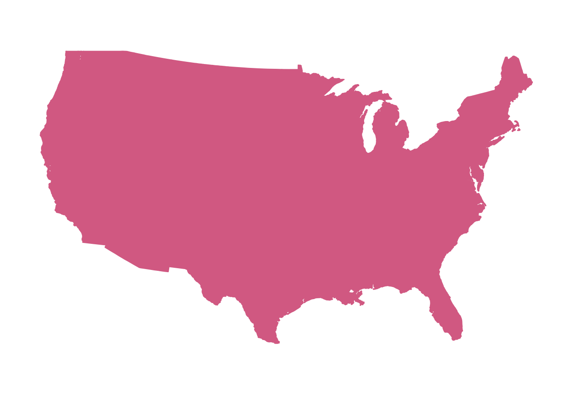

# Only run this if you have not yet installed the tidyverse
install.packages("tidyverse")Plotting geographical maps in R: part I
Using ggplot to make maps and adding custom information to them.
maps
ggplot2
dataviz
1 Intro
Today is the first of three Code Club sessions on making maps with R. We will:
- Plot maps of various regions and learn how to format them (part I, today)
- Add points/markers and text (part II)
- Make “choropleth” maps, where areas are colored depending on a variable like mean temperature (part III)
- Use different map backgrounds, like those of Google Maps, and make interactive maps (part IV??)
This content builds to some extent on the previous series of sessions on making plots with ggplot2, as we will mainly use this package to make maps.
Setting up
We’ll load the entire tidyverse because we’ll be using functions from dplyr as well as today’s main package, ggplot2. You probably have the tidyverse installed already, but if not, run:
And to actually load it:
library(tidyverse)── Attaching core tidyverse packages ──────────────────────── tidyverse 2.0.0 ──
✔ dplyr 1.1.4 ✔ readr 2.1.5
✔ forcats 1.0.0 ✔ stringr 1.5.1
✔ ggplot2 3.5.1 ✔ tibble 3.2.1
✔ lubridate 1.9.4 ✔ tidyr 1.3.1
✔ purrr 1.0.4
── Conflicts ────────────────────────────────────────── tidyverse_conflicts() ──
✖ dplyr::filter() masks stats::filter()
✖ dplyr::lag() masks stats::lag()
ℹ Use the conflicted package (<http://conflicted.r-lib.org/>) to force all conflicts to become errorsWe will also need to install two spatial packages:
install.packages("maps")
install.packages("sf")We don’t need to load these, they are used in the “background” by some of the ggplot functions we’ll use.
2 Basic maps
Map data to draw states in the US
When plotting maps, we typically need a base map that has outlines like administrative borders and coastlines. For today’s maps, we will get this type of map data through ggplot2’s map_data() function.
Let’s get a dataframe with the outlines of the lower 48 states of the US (i.e., without Alaska and Hawaii), and take a look at what it contains:
states <- map_data(map = "state")
head(states) long lat group order region subregion
1 -87.46201 30.38968 1 1 alabama <NA>
2 -87.48493 30.37249 1 2 alabama <NA>
3 -87.52503 30.37249 1 3 alabama <NA>
4 -87.53076 30.33239 1 4 alabama <NA>
5 -87.57087 30.32665 1 5 alabama <NA>
6 -87.58806 30.32665 1 6 alabama <NA>Each row in this dataframe makes up a single point along the outline of a state:
- The
longandlatcolumns contain longitudes and latitudes in decimal format. In the US, all longitudes are negative as we are west of the prime meridian that runs through the UK, and all latitudes are positive as we are north of the equator. - The
groupcolumn groups the rows (points) into shapes/“polygons” that outline the borders of a state, or in some cases, parts of a state1. (This is complemented by theordercolumn which provides the drawing order.) - The
regioncolumn contains the name of the state that the point applies to.

and longitude (right) the position along the east-west axis. Source: Wikipedia
{kind=link}
Our first map
To make a first map, we pass our dataframe to ggplot as per usual, and then use the geom geom_polygon() to draw the polygons that make up the states, mapping:
- Longitude (
long, east-west axis) to thexaesthetic - Latitude (
lat, north-south axis) to theyaesthetic
ggplot(states) +
geom_polygon(aes(x = long, y = lat))
That doesn’t look so good – what could be the problem here?
We need to tell ggplot which groups of points together form discrete shapes like an individual state’s outline, and can do so by additionally mapping our data frame’s group column to the plot’s group aesthetic:
ggplot(states) +
geom_polygon(aes(x = long, y = lat, group = group))
Much better!
Map projections
When creating maps, especially for large geographic areas like the world, continents, or big countries like the US, you need to consider the “projection”. We will not go into the details of map projections here, but will note that:
- Different projections are suitable for different geographic areas
- The ggplot function
coord_sf()sets a geographic coordinate system for the plot and with its argumentcrs(Coordinate Reference System, CRS), we can set the specific projection. - CRS projections have numbers, e.g.:
5070is a projection suitable for the lower 484326is what GPS coordinates like those in ourstatesdataframe are based on
- Below, we’ll use
coord_sf(crs = 5070, default_crs = 4326), to state that:- We want to plot the map with the
5070CRS - Our data has
4326-style GPS coordinates
- We want to plot the map with the
In the map below, note the curvature of especially the latitudinal lines, which our previous maps didn’t have:
ggplot(states) +
geom_polygon(aes(x = long, y = lat, group = group)) +
coord_sf(crs = 5070, default_crs = 4326)Map theming
With maps, more basic ggplot2 themes like theme_minimal() or theme_void() tend to look better since we’re often not that interested in the background panel and the axes.
- With
theme_minimal()– something like this could be useful for a map in a scientific paper:
# Code is the same as above, just with `theme_minimal()` added:
ggplot(states) +
geom_polygon(aes(x = long, y = lat, group = group)) +
coord_sf(crs = 5070, default_crs = 4326) +
theme_minimal()
- With
theme_void(), which omits the plotting panel and axis altogether:
# Code is the same as above, just with `theme_void()` added:
ggplot(states) +
geom_polygon(aes(x = long, y = lat, group = group)) +
coord_sf(crs = 5070, default_crs = 4326) +
theme_void()When you make many plots that should have similar theming, a nice ggplot trick is to set an overall theme for the entire session with the theme_set() function, and optionally modify that with the theme_update() function.
Let’s do that here, so we don’t have to keep adding the theme_void() line to every plot — and we’re also saying that we want any legends above the plot rather than besides it:
theme_set(theme_void())
theme_update(legend.position = "top")We may also want to change the fill and outline colors of the states — and let’s save this map as an object p so we can build on it in the next section:
p <- ggplot(states) +
geom_polygon(
aes(x = long, y = lat, group = group),
fill = "grey85",
color = "grey40",
linewidth = 0.1
) +
coord_sf(crs = 5070, default_crs = 4326)
p
Exercise
A) Create a map that does not have visible state lines. While you’re at it, you can also play around with the settings inside geom_polygon() to get a map look that you like — or one that you hate, just for the fun of it. And how about a map with a blue panel background? After all, most (but not all) of the area surrounding the US is water.
Click here for hints
If the
fillandcolor(=outlines) colors are assigned the same color, no state lines will be visible.You can set the panel background (which in this case is the area around the US stated) with
theme(panel.background = element_rect(...)).
Click here to see some examples
- You can make sure that the state lines aren’t visible by providing the same color for the
colorandfillaesthetics:
ggplot(states) +
geom_polygon(
aes(x = long, y = lat, group = group),
fill = "palevioletred",
color = "palevioletred"
) +
coord_sf(crs = 5070, default_crs = 4326)
- Why should the map look good, anyway?
ggplot(states) +
geom_polygon(
aes(x = long, y = lat, group = group),
fill = "lightblue",
color = "darkred",
linewidth = 1
) +
coord_sf(crs = 5070, default_crs = 4326)
- A blue panel background:
ggplot(states) +
geom_polygon(
aes(x = long, y = lat, group = group),
fill = "grey85",
color = "grey40",
linewidth = 0.1
) +
coord_sf(crs = 5070, default_crs = 4326) +
theme(
panel.background = element_rect(fill = "dodgerblue", color = "grey20")
)B) Still using the states dataframe as a starting point, can you make a map that only shows Ohio? And/or another state, or a combination of neighboring states that you would like to see?
Click here to see hints
Rather than trying to zoom in by setting different axis limits, try to use
filter()to subsetstatesto only Ohio (and/or other states) before you pass the data toggplot().When plotting individual states, our current CFS does not look that great as states are “tilted”. When you’re not interested in looking up a correct projection, just adding
coord_sf()with no arguments can give a reasonable look.
Click here to see some examples
- What are the state names like? Turns out they are all in lowercase:
unique(states$region) [1] "alabama" "arizona" "arkansas"
[4] "california" "colorado" "connecticut"
[7] "delaware" "district of columbia" "florida"
[10] "georgia" "idaho" "illinois"
[13] "indiana" "iowa" "kansas"
[16] "kentucky" "louisiana" "maine"
[19] "maryland" "massachusetts" "michigan"
[22] "minnesota" "mississippi" "missouri"
[25] "montana" "nebraska" "nevada"
[28] "new hampshire" "new jersey" "new mexico"
[31] "new york" "north carolina" "north dakota"
[34] "ohio" "oklahoma" "oregon"
[37] "pennsylvania" "rhode island" "south carolina"
[40] "south dakota" "tennessee" "texas"
[43] "utah" "vermont" "virginia"
[46] "washington" "west virginia" "wisconsin"
[49] "wyoming" - Plotting only Ohio – first use
filter()to only keep the outline for the state of Ohio, then plot like before:
states |>
filter(region == "ohio") |>
ggplot() +
geom_polygon(
aes(x = long, y = lat, group = group),
fill = "skyblue",
color = "grey40",
linewidth = 0.5
) +
coord_sf()- Plotting Ohio along with two neighboring states:
states |>
filter(region %in% c("ohio", "indiana", "michigan")) |>
ggplot() +
geom_polygon(
aes(x = long, y = lat, group = group),
fill = "azure4",
color = "grey40",
linewidth = 0.5
) +
coord_sf()
Zooming in
In the exercise above, we plotted only Ohio by filtering the input data frame. Alternatively, we may want to zoom in to a region without considering administrative borders. We can do so with the xlim and ylim arguments of coord_sf():
ggplot(states) +
geom_polygon(
aes(x = long, y = lat, group = group),
fill = "grey85",
color = "grey40",
linewidth = 0.2
) +
# Set the x and y limits inside coord_sf:
coord_sf(xlim = c(-79, -89), ylim = c(35, 45)) +
# We may now want to draw a border around the plot since we're cutting of
# landmasses:
theme(
panel.border = element_rect(fill = NA, color = "grey20", linewidth = 0.5)
)
Footnotes
Michigan for example, has a polygon for the lower part of the state, and one for the Upper Peninsula.↩︎